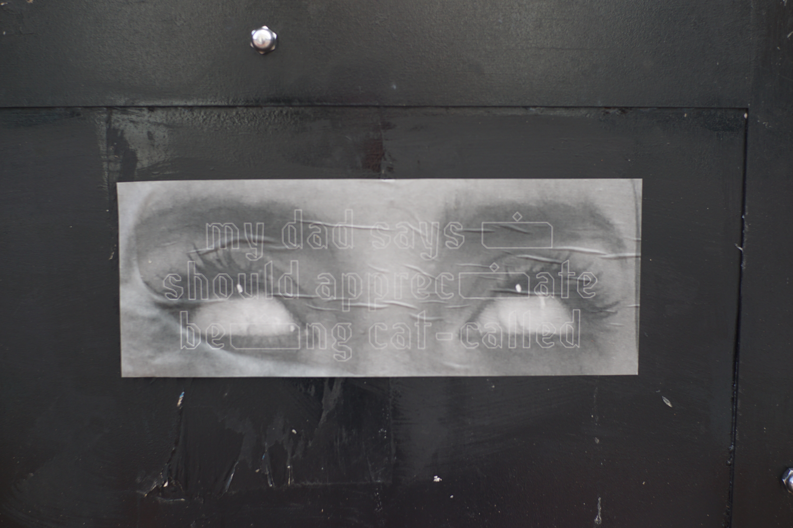
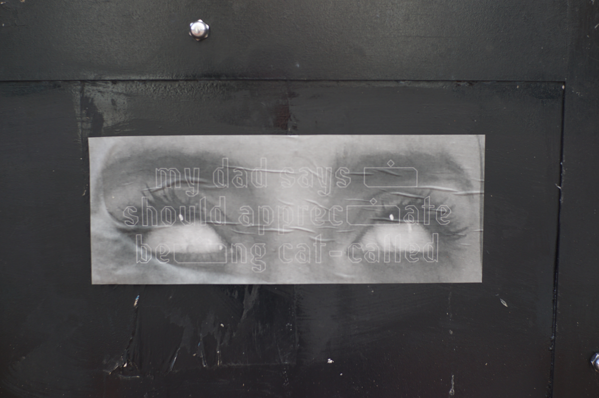
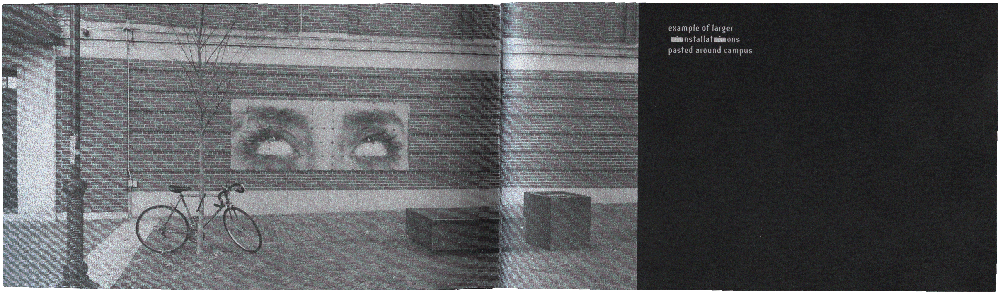
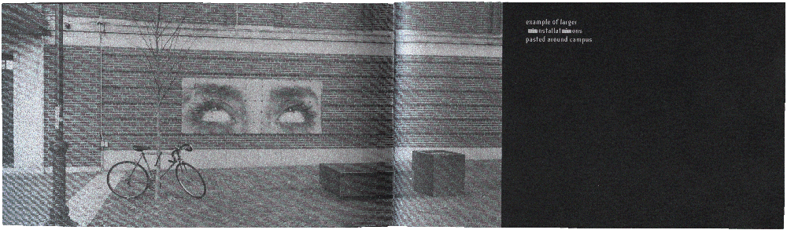

Photographic installations of me rolling my eyes at the everyday sexism I experience and witness. Eye-rolling is widely associated with teenage girls, but psychologists beleive that evolutionarily, women have used eye-rolling as a form of indirect aggression in order to survive. A large scale installation on RISD’s campus and smaller versions stealthily pasted around Providence. An accompanying publication is typeset in Résistance, an aptly named font with very large i's.
Process
Home


 

 
